El Portal de procesos es el sistema de Century Mold para pedir y autorizar tiempo extra y transporte. Como administrador tienes, siempre, todos los permisos de todos los roles: Autorización 2, Autorización 1 y solicitante de todas las áreas, además de Recursos Humanos y Nóminas.
Eso quiere decir que capturas, autorizas y devuelves en cualquier nivel (también lo que tú mismo capturaste), autorizas fuera de tiempo, cancelas, confirmas el envío al proveedor, ajustas, firmas y reabres la nómina, y administras usuarios, roles, catálogos y estructura. Todo queda en el historial y en la bitácora con tu nombre.
Este manual solo explica lo que únicamente tú haces. Para lo demás, usa el manual del rol: Solicitante, Autorizador 1, Autorizador 2, Recursos Humanos y Nóminas. Todos están en Ayuda y manuales, porque tú ves los seis.
Lo que solo tú haces
Descargar el respaldo completo de todos los datos.
Ver la vista previa por rol: qué menú y qué pantallas tendría cualquier combinación de roles.
Dar y quitar el rol Administrador y el rol Autorización 2; restablecer la contraseña de cualquiera (incluidos Recursos Humanos).
Cargar asignaciones iniciales, actualizar nombres y puestos de las asignaciones y crear la estructura inicial.
Preparar para producción: borrar los datos de prueba antes de arrancar.
El diagnóstico de colecciones y limpiar estructura vieja.
Lo que NO puedes hacer
Restablecer tu propia contraseña desde Usuarios: usa Mi cuenta › Cambiar mi contraseña.
Cambiar tu propio rol ni darte a ti mismo el rol de Nóminas.
Borrar solicitudes de tiempo extra: no existe ese botón en la pantalla.
Marcarte a ti mismo para borrar en «Preparar para producción».
Borrar cuentas de Authentication desde el portal: se borran a mano en la consola de Firebase.
2. Primeros pasos
Entrar al portal
Abre https://centurymold-qro.web.app en tu navegador (Chrome, Edge o el de tu celular).
Escribe tu número de nómina.
Escribe tu contraseña. El ojito sirve para ver lo que escribes.
Toca Iniciar sesión.
Si no la recuerdas, toca ¿Olvidaste tu contraseña?. Solo se restablece en persona, con otro administrador o con Recursos Humanos y tu identificación.
Tu pantalla de inicio
Tu Inicio es el de Recursos Humanos (indicadores de toda la planta). Si no has descargado un respaldo reciente, arriba te lo recuerda.
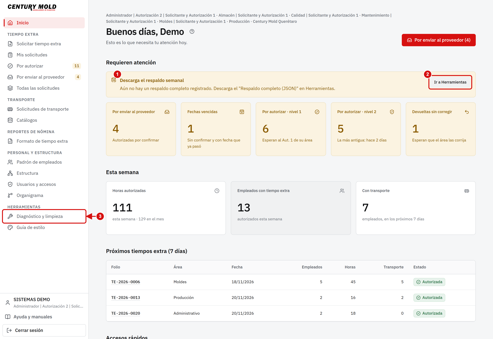
Descarga el respaldo semanal: aviso en «Requieren atención».
Ir a Herramientas: te lleva a la pantalla de respaldos.
En el menú, bajo Herramientas, está Diagnóstico y limpieza.
El menú
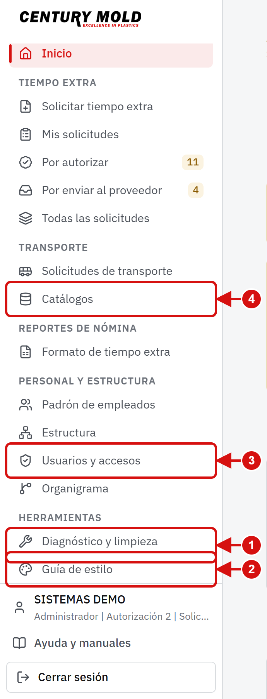
Diagnóstico y limpieza: tus herramientas (respaldo, vista previa por rol, preparar para producción).
Guía de estilo: la muestra de componentes de la pantalla. Es para quien diseña; no cambia nada.
Usuarios y accesos: usuarios, asignaciones y organigrama.
Catálogos: rutas, comunidades, puntos de reunión y motivos.
Abajo, tu nombre dice todos tus roles. En Mi cuenta cambias tu contraseña, el tamaño de letra, el tema y las ayudas. Por seguridad la sesión se cierra a los 30 minutos sin usar.
3. Diagnóstico y limpieza: la pantalla de Herramientas
Para qué sirve. Reúne lo que se usa pocas veces y que puede escribir o borrar en la base de datos. Se entra por Diagnóstico y limpieza en el menú. Arriba dice «Lee con calma las herramientas de abajo antes de ejecutar algo: algunas escriben en la base de datos».
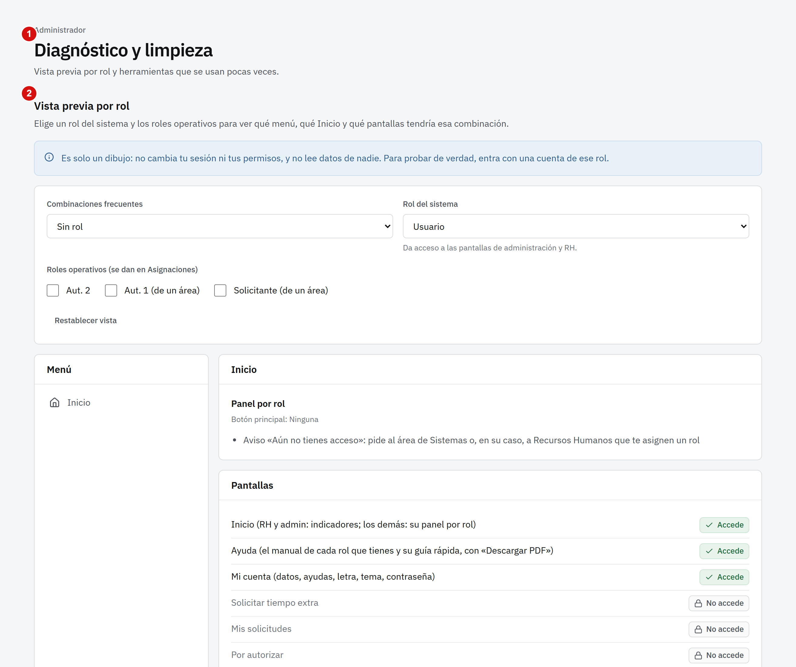
El encabezado: «Diagnóstico y limpieza», marcado Administrador.
Vista previa por rol: lo primero de la pantalla (siguiente sección).
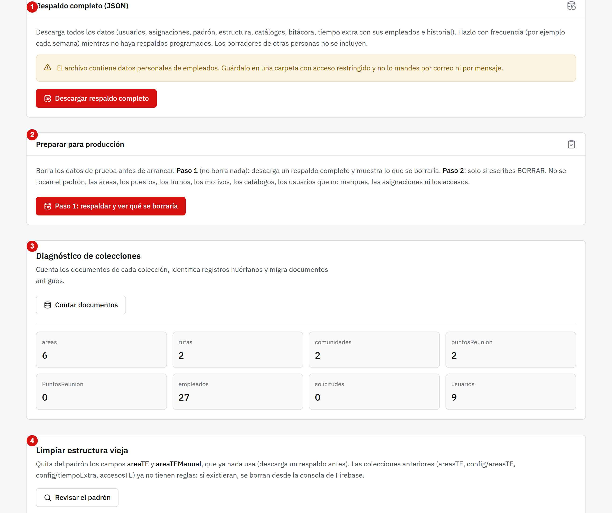
Respaldo completo (JSON): descarga todos los datos.
Preparar para producción: borra los datos de prueba antes de arrancar (con respaldo previo).
Diagnóstico de colecciones: cuenta documentos y busca registros huérfanos.
Limpiar estructura vieja: quita campos que ya nada usa.
4. Respaldo completo (cada semana)
Para qué sirve. Es la copia de todo lo que hay en el portal, para recuperar datos si algo sale mal. Cuándo se usa:cada semana, mientras no haya respaldos programados, y siempre antes de importar, cargar elegibles o preparar para producción.
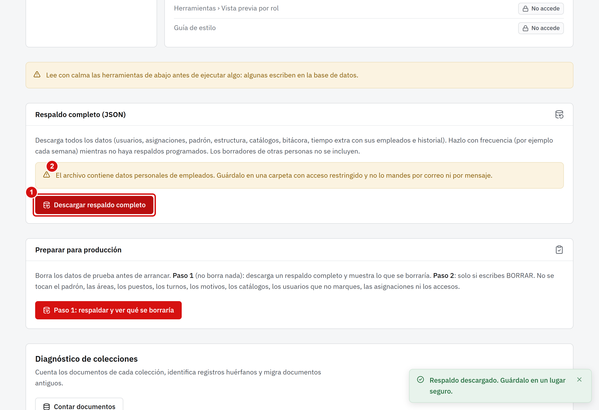
Descargar respaldo completo: baja un archivo JSON con todo.
Lee el aviso: el archivo contiene datos personales de empleados. Guárdalo en una carpeta con acceso restringido y no lo mandes por correo ni por mensaje.
El respaldo incluye usuarios, asignaciones, padrón, estructura, catálogos, bitácora y el tiempo extra con sus empleados e historial. Los borradores de otras personas no se incluyen (el respaldo de «Preparar para producción» sí los incluye). Cada descarga queda en la bitácora con tu nombre.
El portal no puede restaurar un respaldo por sí solo: el archivo sirve para recuperar datos con ayuda de quien administra la plataforma. Por eso conviene guardar varios, con fecha en el nombre.
5. Vista previa por rol
Para qué sirve. Saber qué menú, qué Inicio y qué pantallas tendría una persona con cierta combinación de roles, sin cambiar tu sesión. Es un dibujo: no lee datos reales y no cambia tus permisos. Cuándo se usa: cuando alguien dice «no veo tal pantalla» o antes de darle un rol.
Rol del sistema: Usuario, Recursos Humanos, Nóminas o Administrador.
Restablecer vista la deja como al inicio.
Pantallas: la lista de todo lo que tendría, con «Accede» o «No accede».
Abajo de las casillas ves el menú y el Inicio que tendría esa persona. Si algo no coincide con lo que reporta, revisa su rol del sistema y sus asignaciones (con su vigencia) en Usuarios y accesos.
6. Roles que solo tú das, y contraseñas de cualquiera
Dar o quitar el rol Administrador
En Usuarios y accesos › Usuarios, con el lápiz ✎ de la persona, Rol del sistema incluye Administrador del sistema (Recursos Humanos y Aut. 2 no lo ven). Elígelo y toca Guardar nombre y rol; el portal pide confirmación y queda en la bitácora.
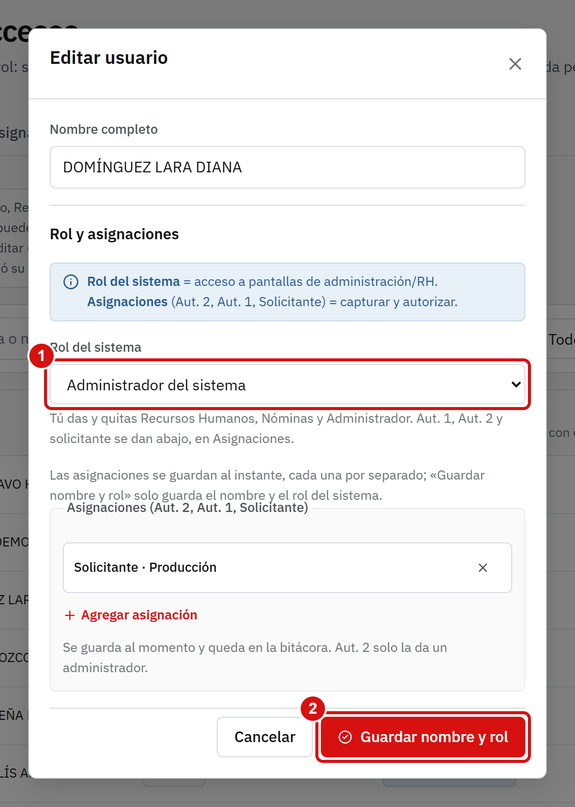
Rol del sistema: ahí aparece Administrador.
Guardar nombre y rol.
El administrador tiene todos los permisos de todo el sistema. Dalo solo a quien lo necesita, y quítalo cuando deje de necesitarlo. Nadie cambia su propio rol, y a quien ya es administrador solo se le cambia el rol, no el nombre ni el estado.
Dar Autorización 2
Autorización 2 es la segunda firma de toda la planta. Solo tú la das, en Asignar roles › Asignar rol.
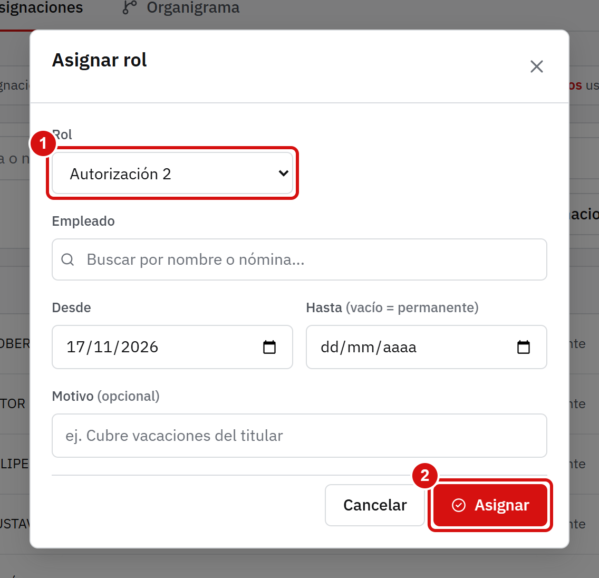
Rol: elige Autorización 2 (Recursos Humanos y Aut. 2 solo ven Autorización 1 y Solicitante).
Elige al empleado, las fechas (Hasta vacío = permanente) y, si quieres, un motivo; toca Asignar.
Quien tiene la asignación de Aut. 2 pero su rol del sistema es «Usuario» no ve nada de Recursos Humanos. Si también es de RH, cámbiale el rol del sistema. Para lo demás de las asignaciones (extender, revocar, suplencias), lee el manual del Autorizador 2 o de Recursos Humanos.
Restablecer la contraseña de cualquiera
Tú puedes restablecer la contraseña de cualquier usuario, incluidos Recursos Humanos y otros administradores (Recursos Humanos y Aut. 2 no pueden con los de RH ni con los administradores). La tuya no: usa Mi cuenta.
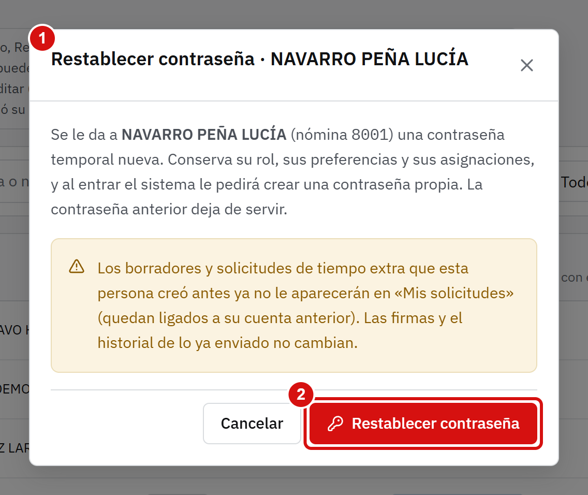
Antes de restablecer, verifica a la persona en persona, con su identificación.
La llave 🔑 de su fila abre el aviso; Restablecer contraseña genera la temporal, que se ve una sola vez. Entrégala en persona.
7. Asignaciones iniciales, nombres y estructura inicial
Tres herramientas de arranque que solo tú ves. Las tres simulan primero y no guardan nada sin que lo confirmes; lo que ya existe no se toca.
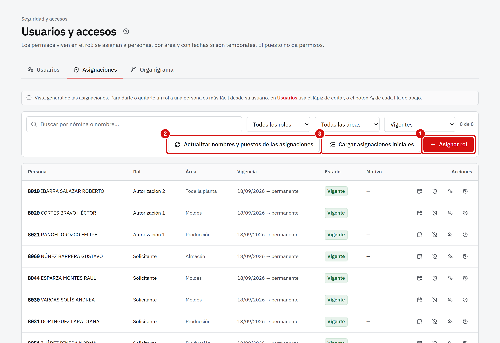
Asignar rol: la asignación de uno en uno.
Actualizar nombres y puestos de las asignaciones.
Cargar asignaciones iniciales.
Cargar asignaciones iniciales
Carga de una vez los Autorizadores 1, los Autorizadores 2 y los solicitantes que vienen de la hoja «Niveles de autorización». Es una lista de revisión: cada fila trae su casilla, su estado («No está en el padrón», ya existe, etc.) y solo se crean las que marques. Es idempotente: repetirla no duplica nada.
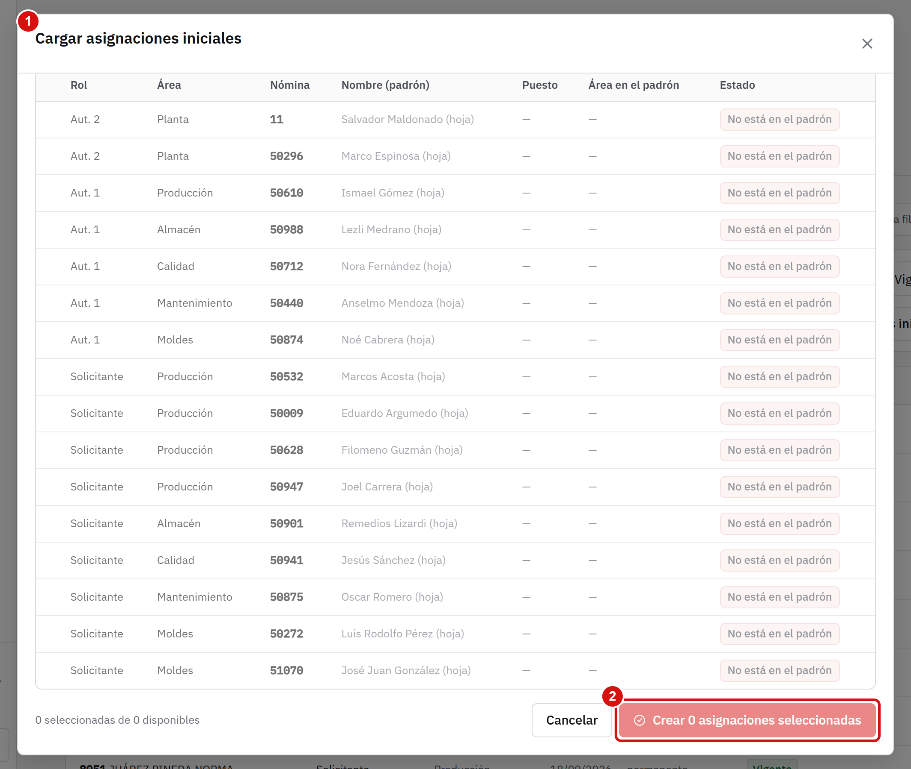
Revisa la lista. Si alguien no está en el padrón, no se puede asignar: primero dalo de alta. Abajo dice cuántas llevas marcadas; el botón crea solo esas.
Actualizar nombres y puestos de las asignaciones
Copia el nombre y el puesto del padrón a cada asignación (y vincula el puesto con el catálogo). Sirve para que el organigrama muestre a las personas con su nombre actual.
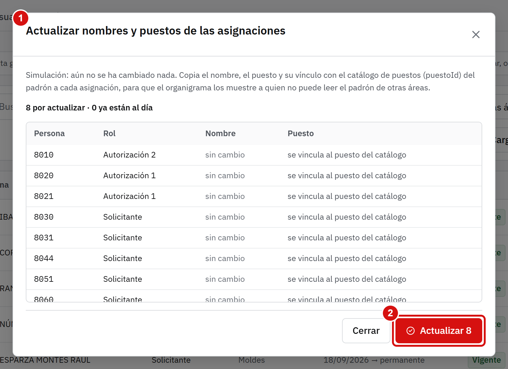
Es una simulación: la lista dice cuántas se actualizarían y cuántas ya están al día. Confirma con el botón (por ejemplo, «Actualizar 8»).
Crear estructura inicial
Aparece en Estructura › Áreas. Propone las áreas y los puestos que faltan a partir de los datos que ya existen. Nunca sobrescribe lo que ya hay.
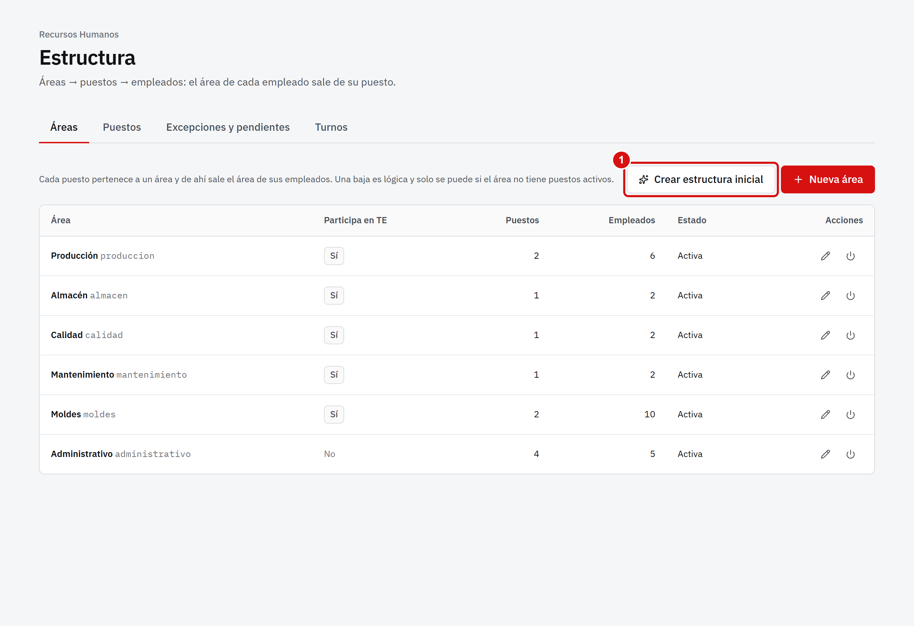
El botón Crear estructura inicial.
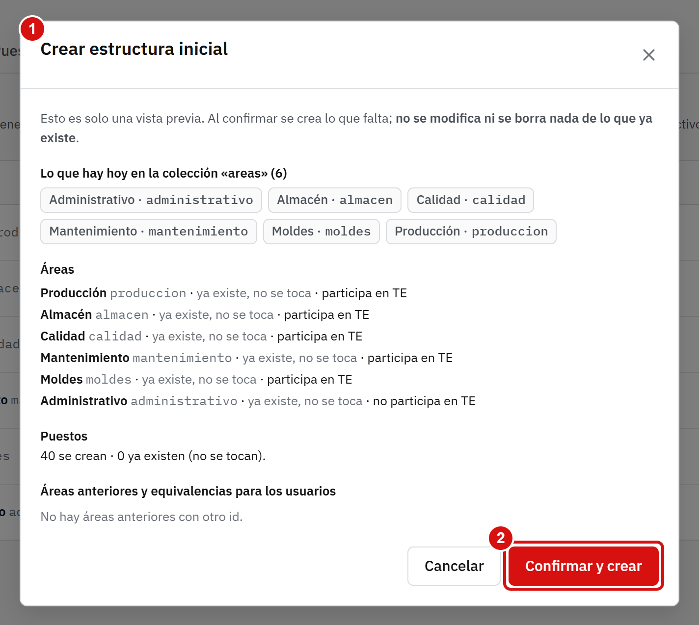
La vista previa dice qué áreas y puestos se crearían y qué ya existe. Solo al confirmar con Confirmar y crear se guarda.
Estas tres herramientas se usan al arrancar o cuando cambia mucho el padrón. Con el sistema en marcha, lo normal es dar roles uno por uno (lee el manual de Recursos Humanos).
8. Cargar elegibles TE
Para qué sirve. Actualiza de una vez quién puede tener tiempo extra («elegible») a partir de un archivo de Excel. Está en Padrón de empleados › Cargar elegibles TE, y la usan Recursos Humanos y tú. No se guarda nada hasta que pulses Aplicar. Los pasos con todos los detalles están en el manual de Recursos Humanos; aquí lo esencial.
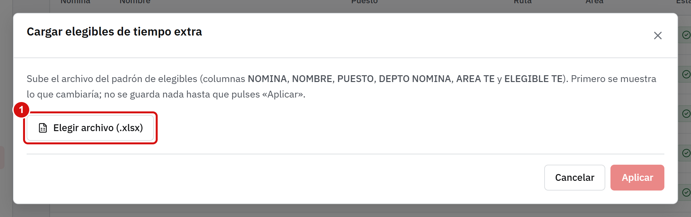
Toca Elegir archivo (.xlsx). Columnas: NOMINA, NOMBRE, PUESTO, DEPTO NOMINA, AREA TE y ELEGIBLE TE.
Nuevos en el padrón: las nóminas del archivo que no están; se darán de alta (con puesto y área editables).
Del padrón y no vienen en el archivo: Dar de baja desactiva a quien marques; el resto queda no elegible.
Aplicar (n cambios, a altas, b bajas): escribe todo, con un resumen en la bitácora.
Antes de aplicar, descarga el respaldo (sección anterior) y revisa con calma la lista de bajas: marcar de más desactiva a personas que sí trabajan. Una vez aplicado, no hay botón de deshacer.
9. Preparar para producción
Para qué sirve. Antes de arrancar con datos reales, borra los datos de prueba: solicitudes de tiempo extra y de transporte, ajustes de nómina, bitácora y el contador del folio. El próximo folio será TE-AAAA-0001. No toca el padrón, las áreas, los puestos, los turnos, los motivos, los catálogos, las asignaciones, los accesos ni los usuarios que no marques.
Hazlo solo una vez, el día anterior al arranque, y descarga el respaldo antes. Esta herramienta borra datos de verdad y no se puede deshacer (salvo con el respaldo). No la uses con el sistema ya en marcha.
Las capturas de esta sección se tomaron en un emulador con datos inventados, no en producción. Así lo puedes practicar antes de hacerlo de verdad.
Antes de empezar
Avisa a todos que el portal no se debe usar mientras dura la limpieza.
Ten a la mano la consola de Firebase › Authentication: al final tendrás que borrar ahí, a mano, las cuentas de los usuarios que borres.
Confirma que el padrón, las asignaciones y los catálogos ya están como los quieres: eso se conserva.
Paso 1: respaldar y ver qué se borraría (no borra nada)
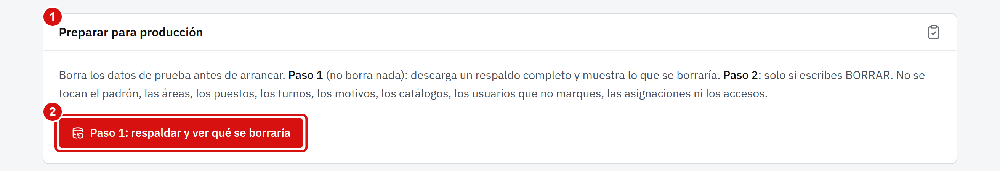
La tarjeta explica los dos pasos.
Toca Paso 1: respaldar y ver qué se borraría. Descarga el respaldo completo (con los borradores incluidos) y abre una ventana de limpieza que caduca sola (máximo 2 horas) si no la usas.
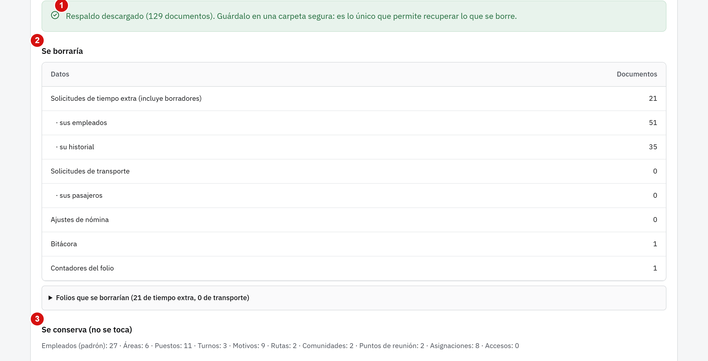
El aviso verde confirma el respaldo y cuántos documentos trae. Guárdalo en una carpeta segura: es lo único que permite recuperar lo que se borre.
Se borraría: la tabla de documentos por tipo (solicitudes de tiempo extra con sus empleados e historial, solicitudes de transporte con sus pasajeros, ajustes de nómina, bitácora y contadores del folio), y la lista de folios.
Se conserva (no se toca): padrón, áreas, puestos, turnos, motivos, rutas, comunidades, puntos, asignaciones y accesos, con su cantidad.
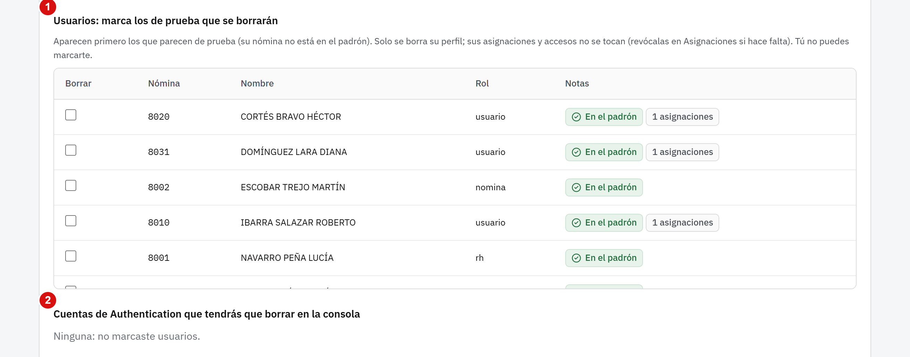
Usuarios: marca los usuarios de prueba que se borrarán. Salen primero los que parecen de prueba (su nómina no está en el padrón). Solo se borra su perfil; sus asignaciones no se tocan. Tú no puedes marcarte.
Cuentas de Authentication: la lista exacta de cuentas que tendrás que borrar después en la consola de Firebase, con un botón para copiar los correos.
Paso 2: borrar
Solo después de revisar el inventario. El paso 2 está apagado hasta que escribas la palabra de confirmación.
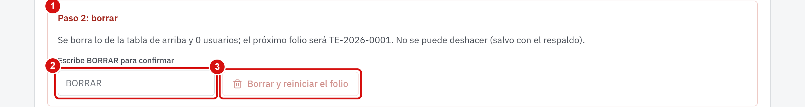
El texto dice qué se borra y que el próximo folio será TE-AAAA-0001.
Escribe BORRAR en el campo.
Toca Borrar y reiniciar el folio. Se borra por lotes, con una barra de avance; no cierres la pantalla mientras trabaja.
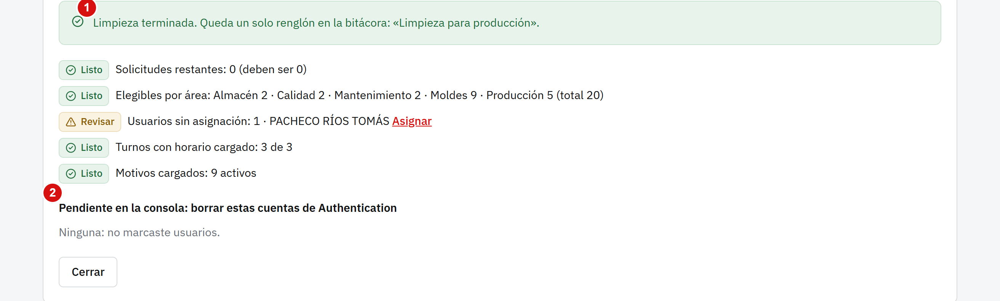
Al terminar dice «Limpieza terminada» y queda un solo renglón en la bitácora: «Limpieza para producción».
La lista de verificación confirma: solicitudes restantes (deben ser 0), elegibles por área, usuarios sin asignación (con un enlace para asignarlos), turnos con horario cargado y motivos cargados.
Pendiente en la consola: las cuentas de Authentication que debes borrar a mano.
Después
En la consola de Firebase › Authentication, busca y borra cada correo de la lista (si una ya no existe, sáltala).
Revisa la lista de verificación: cualquier renglón con «Revisar» (por ejemplo, un usuario sin asignación) se corrige en Usuarios y accesos.
Descarga otro respaldo completo y guárdalo: es el punto de partida limpio.
Haz una prueba corta con una solicitud real y confirma que el folio empieza en 0001.
10. Diagnóstico de colecciones y limpiar estructura vieja
Diagnóstico de colecciones
Cuenta los documentos de cada colección de la base de datos y busca registros huérfanos (por ejemplo, puntos de reunión cuya comunidad ya no existe, que por eso no aparecen al capturar). También puede migrar documentos antiguos.
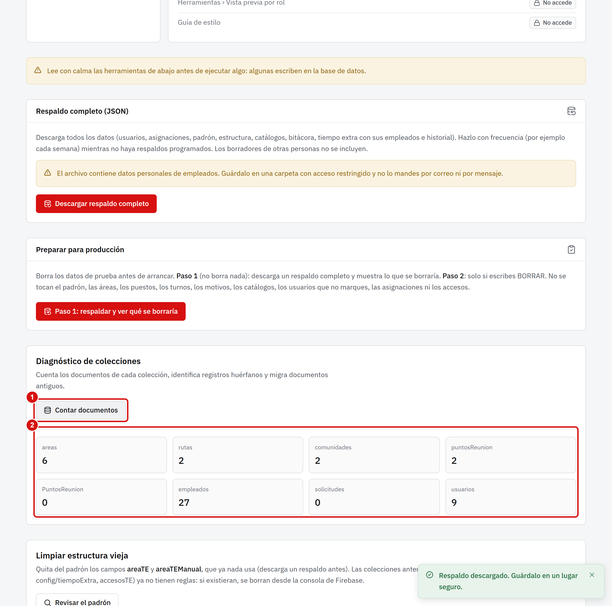
Contar documentos actualiza los números.
Cada cuadro dice una colección (áreas, rutas, comunidades, puntos de reunión, empleados, solicitudes, usuarios…) y cuántos documentos tiene.
Si aparece «PuntosReunion» (con P mayúscula) con documentos, es una colección antigua: el botón Migrar los copia a la correcta, pero la colección vieja se borra a mano en la consola de Firebase. Si hay huérfanos, corrígelos en Catálogos › Puntos de reunión.
Limpiar estructura vieja
Quita del padrón dos campos que ya nada usa (areaTE y areaTEManual). Descarga un respaldo antes. Primero Revisar el padrón dice cuántos empleados los tienen; si hay, te pide escribir LIMPIAR para confirmar.
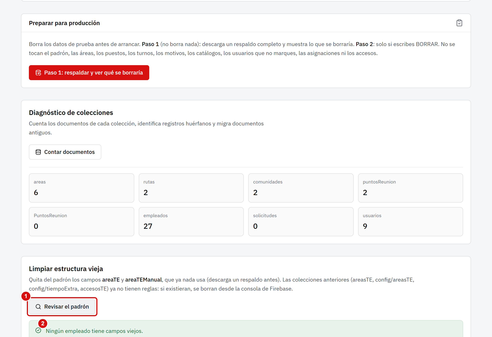
Revisar el padrón. Si dice «Ningún empleado tiene campos viejos», no hay nada que limpiar.
11. Qué revisar si algo falla
Casi todo lo que reporta la gente se resuelve con estas preguntas. Revísalas en orden.
Alguien no puede entrar
En Usuarios y accesos › Usuarios: ¿existe su usuario y está Activo? Si está desactivado, el ojo lo reactiva.
¿Usa su número de nómina y no otro dato? ¿La contraseña es la temporal vigente? Si hay duda, restablece la contraseña (en persona) y entrega la nueva.
Si el portal le pide crear una contraseña nueva, es normal con la temporal.
Alguien no ve una pantalla o un botón
Mira su rol del sistema (Usuario, RH, Nóminas) y sus asignaciones (Aut. 2, Aut. 1, Solicitante) con su vigencia: una asignación Vencida, Programada o Revocada no da permisos.
Usa la vista previa por rol con su combinación y compara con lo que dice ver.
Una cuenta «Usuario» con solo Aut. 2 no ve nada de RH (el aviso «¿Esta persona también es de RH?» lo dice).
Si ve un mensaje de «no tienes permiso», casi siempre es de rol o vigencia; revisa lo anterior.
Una solicitud no avanza
En Todas las solicitudes › Ver: ¿en qué nivel está?
En el Organigrama: si el área dice Sin Autorización 1, no puede avanzar. Asígnale uno en Asignaciones.
Si pasó la fecha, está Vencida: solo Autorización 2 puede autorizarla fuera de tiempo.
Si es de Administrativo y la capturó RH, la firma otro RH o un Aut. 2 (nadie firma lo que creó).
No aparecen empleados para capturar, o el Formato de rutas sale vacío
Padrón: ¿el empleado está activo, con el puesto del área y Elegible para tiempo extra?
Formato de rutas: solo lleva lo confirmado y a quienes llevan transporte. Confirma en Por enviar al proveedor.
Un punto de reunión «huérfano» no aparece: usa Contar documentos y revisa Catálogos.
El portal muestra un error
Los errores traen un botón Ver detalle: ábrelo, copia el texto y guárdalo junto con el folio o la pantalla donde pasó. Es lo que se necesita para revisar la causa. Si es un problema de conexión, basta con recargar la página.
Algo se borró o se cambió por error
Todo cambio importante queda en la bitácora con nombre y fecha; en una solicitud, en su historial.
Para recuperar datos, usa el respaldo completo más reciente (con ayuda de quien administra la plataforma).
Una semana firmada en Nóminas se reabre desde la revisión del área (RH o tú).
12. Casos especiales
Alguien dejó la empresa
Desactívalo en Usuarios (el ojo) para que ya no entre, revoca sus asignaciones y, en el Padrón, dalo de baja. Conserva su historial: las solicitudes pasadas guardan su nombre.
Cambió el jefe de un área
En Asignaciones, revoca (o deja vencer) la Autorización 1 anterior y asigna la nueva. Para suplencias, usa fechas de inicio y fin. Revisa el Organigrama al terminar.
Necesito entrar como otra persona para probar
No existe «entrar como». Usa la vista previa por rol para ver menú y pantallas, y la cuenta de prueba de cada rol para probar de verdad. Nunca pidas la contraseña de otra persona.
Me equivoqué al correr «Preparar para producción»
El respaldo del paso 1 contiene todo lo borrado. No hay botón para restaurarlo desde el portal: avisa a quien administra la plataforma de inmediato y no uses el portal hasta resolverlo.
Perdí mi acceso de administrador
Otro administrador puede restablecer tu contraseña. Si eres el único, la recuperación se hace desde la consola de Firebase, con quien administra la plataforma.
El proveedor no recibió a alguien
La aplicación no avisa al proveedor por sí sola. Revisa, en este orden: que la solicitud estaba confirmada; que la persona llevaba transporte con ruta, comunidad y punto; que sale en el Formato de rutas del día correcto (lo que cruza la medianoche va al día siguiente); que su teléfono está en el padrón; y que el archivo se mandó después de confirmar. Los pasos están en el manual de Recursos Humanos.
13. Preguntas frecuentes
¿Puedo hacer todo lo que hacen los demás roles?Sí. Tienes todos los permisos de todos los roles. Lo que hagas queda con tu nombre en el historial y la bitácora.
¿Con qué frecuencia respaldo?Cada semana, y siempre antes de importar, cargar elegibles o preparar para producción.
¿Se puede restaurar un respaldo desde el portal?No. El archivo sirve para recuperar datos con ayuda de quien administra la plataforma.
¿Puedo borrar una solicitud de tiempo extra?No hay botón en la pantalla. Se cancela (con motivo) y queda en el historial.
¿Quién puede dar Autorización 2?Solo un administrador.
¿Puedo restablecer mi propia contraseña desde Usuarios?No. Usa Mi cuenta › Cambiar mi contraseña.
¿Cuántas veces se corre «Preparar para producción»?Una sola vez, el día anterior al arranque.
¿Quién borra las cuentas de Authentication?Tú, a mano, en la consola de Firebase. El portal solo te da la lista.
Se cerró mi sesión.Por seguridad se cierra a los 30 minutos sin usar. Entra de nuevo; lo ya hecho no se pierde.
14. Qué significa cada estatus
Los estatus del tiempo extra, y qué se hace con cada uno (tú puedes hacer lo de cualquier rol):
Estatus
Qué significa
Qué haces tú
Borrador
Alguien la guardó y todavía no la envía. Solo la ve quien la armó.
Nada. No la ves ni la puedes tocar hasta que la envíe.
En autorización (nivel 1)
Espera la firma del jefe de su área (Autorización 1).
Nada. La ves en Todas las solicitudes; ahí también puedes cancelarla con un motivo.
En autorización (nivel 2)
Ya firmó el jefe de área. Espera la segunda firma.
Puedes firmarla «como RH» en Por autorizar (menos lo que tú creaste) o esperar a Autorización 2.
Devuelta
Alguien pidió que se corrija; regresó a quien la capturó.
Nada. Al reenviarla vuelve a empezar desde el nivel 1.
Autorizada
Tiene las firmas necesarias. Espera tu confirmación.
Está en Por enviar al proveedor: Confirmar, Devolver, Cancelar o, si su fecha ya pasó, Cerrar sin transporte.
Confirmada por RH
La confirmaste: se creó su solicitud de transporte (si había empleados con transporte).
Baja el Formato de rutas del día y mándalo al proveedor. Puedes cancelarla con un motivo desde Todas las solicitudes.
Vencida
Pasó el día del tiempo extra sin terminar de autorizarse.
Nada. Solo Autorización 2 puede autorizarla fuera de tiempo.